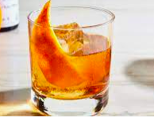

Chocolate Old Fashioned

Description
If you're looking for an after dinner drink that you could really spend time sipping and appreciating the spirit
this is definetly the drink you!
Ingredients
- Japanese Akashi Whiskey
- Chocolate Bitters
- Sugar or Simple Syrup
- Ice
Steps
- If you are using a sugar cube, granulated sugar then place your bitters in and muddle. If you are using simple
syrup then just put about a bar spoon of it in with your bitters.
- Put your ice in and 2 OZ of the Akashi Whiskey
- Stir cocktail until sugars are mixed in and you should be ready to enjoy
- You could garnish this with an orange peel or you could do no garnish at all!